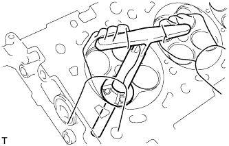

CYLINDER HEAD > REPAIR |
| 1. REPAIR INTAKE VALVE SEAT |
Using a 45° cutter, resurface the valve seat so that the valve seat width is more than the specification.
Using 30° and 60° cutters, correct the valve seat so that the intake valve contacts the entire circumference of the seat. The contact should be in the center of the intake valve seat, and the intake valve seat width should be maintained within the specified range around the entire circumference of the intake valve seat.
| *1 | Width |
Hand-lap the intake valve and intake valve seat with an abrasive compound.
Check the intake valve seating position.
| 2. REPAIR EXHAUST VALVE SEAT |
|  |
Using a 45° cutter, resurface the valve seat so that the valve seat width is more than the specification.
Using 30° and 60° cutters, correct the exhaust valve seat so that the exhaust valve contacts the entire circumference of the seat. The contact should be in the center of the exhaust valve seat, and the exhaust valve seat width should be maintained within the specified range around the entire circumference of the exhaust valve seat.
| *1 | Width |
Hand-lap the exhaust valve and exhaust valve seat with an abrasive compound.
Check the exhaust valve seating position.